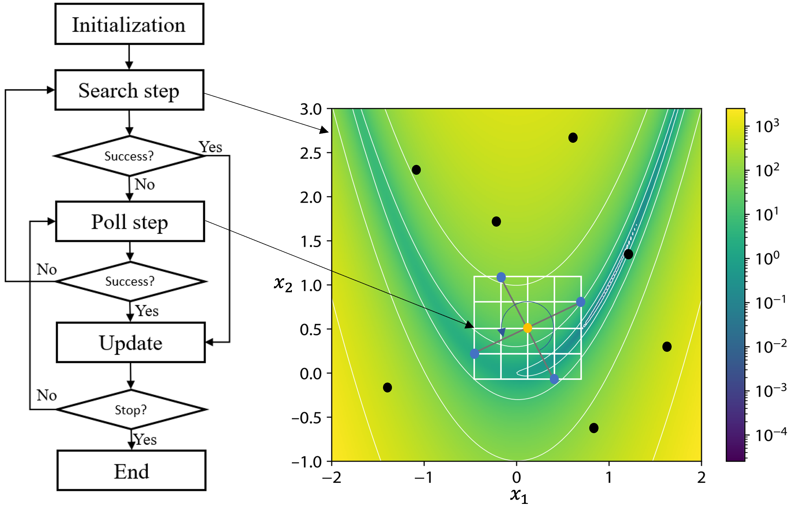
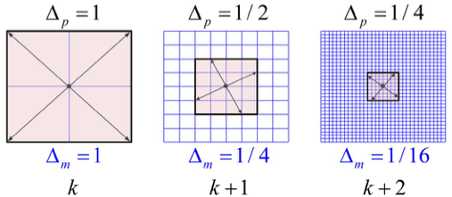

Background#
MADS is a derivative-free optimization method supported by a convergence analysis: under mild assumptions it generates a subsequence of iterates that converges to a point satisfying first-order (Clarke) optimality conditions, wherever it starts [Audet and Dennis, 2006]. Each iteration has two main steps, shown in Figure 1. The first is an optional search step, where any strategy may propose a finite number of trial points on the mesh (a design of experiments, a surrogate or model optimization, a global heuristic). The second is the mandatory poll step, a local exploration where poll directions spin around the incumbent solution on the discretized frame, and the blackbox is evaluated at the resulting poll points.


Figure 1 OMADS flow chart.#
When to use OMADS#
If the optimization problem is deterministic, this checklist helps you decide whether OMADS is a good choice from a computational-cost point of view.
If the problem has a known structure with explicit derivatives, a gradient-based method such as SQP should be used.
If the derivatives are unknown but can be reliably approximated and the design space has no differentiability issues, a gradient-based or model-based method such as NLPQLP is appropriate.
If the derivatives can be approximated but the design space has differentiability issues, a model-based derivative-free method such as COBYLA may be preferred.
If none of the above applies, that is, the functions are blackboxes (simulations or codes that cannot be differentiated), non-smooth, noisy or liable to fail, a blackbox method such as MADS is recommended. This is particularly so when evaluations are expensive, or when the problem has hidden or unrelaxable constraints, several objectives, or granular variables.
Note
OMADS 2610 is a Pythonic implementation of MADS with a progressive barrier, a granular mesh, ORTHO N+1 poll directions, a quadratic-model search and a density-guided sampling search.
Introduction#
In this section, we present the MADS algorithm. We begin with the definitions of the mesh and the frame from [Audet and Dennis, 2006, Audet and Hare, 2017].
Definition 1 (Mesh)
Let \(G \in \mathbb{R}^{n\times n}\) be an invertible matrix and let the columns of \(Z \in \mathbb{Z}^{n \times p}\) form a positive spanning set for \(\mathbb{R}^n\). Define \(D = GZ\). The mesh of coarseness \(\delta^{k} > 0\) generated by \(D\), centred at the incumbent solution \(x^{k} \in \mathbb{R}^n\), is
where \(\delta^{k}\) is called the mesh size parameter.
What distinguishes MADS from generalized pattern search (GPS) is a second parameter, the frame size \(\Delta^{k}\), which replaces \(\delta^{k}\) in the poll step. The frame size defines the region in which polling happens: the poll directions spin around the incumbent solution. At every iteration the two parameters satisfy \(0 < \delta^{k} \le \Delta^{k}\).
Definition 2 (Frame)
With \(G\), \(Z\) and \(D = GZ\) as above, select a mesh size parameter \(\delta^{k} > 0\) and let \(\Delta^{k}\) satisfy \(\delta^{k} \le \Delta^{k}\). The frame of extent \(\Delta^{k}\) generated by \(D\), centred at \(x^{k}\), is
and \(\Delta^{k}\) is called the frame size parameter.
In MADS, the poll set is built from mesh points inside the frame \(F^{k}\). Because the mesh size shrinks faster than the frame size (\(\delta^{k} = \min\{\Delta^{k}, (\Delta^{k})^2\}\)), the set of directions that can be chosen keeps growing, which allows an asymptotically dense set of poll directions; see Figure 2.


Figure 2 Mesh and poll updates.#
Constraints are handled through the constraint violation function
computed over the relaxable constraints \(\mathcal{P}\) ("PB"). A point violating an
unrelaxable constraint ("EB") is rejected outright (its violation is reported as
\(h_{EB} = \sum_{j \in \mathcal{E}} \max\{c_j(x),0\}^2\) and it never enters the
barrier as a candidate centre). A point is feasible when \(h(x) = 0\).
MADS algorithm#
This section explains each step of the MADS algorithm, shown in Algorithm 1, and how it is
implemented in OMADS. The three public entry points run different subsets of it:
mads.main runs the whole algorithm, poll.main runs the Update, Poll and Terminate
procedures only, and search.main replaces the poll with the sampling search.
Success types
OMADS classifies every evaluated trial point \(t\) against the current frame centres (see Algorithm 2):
Full success: \(t\) is feasible and dominates (or equals) the feasible frame centre, or \(t\) is infeasible and dominates the infeasible frame centre.
Partial success: \(t\) is infeasible and only reduces the constraint violation \(h\) of the infeasible frame centre.
Unsuccessful: anything else.
Successful points enlarge the frame of their own barrier element along the successful step; an unsuccessful iteration refines the frame of the feasible frame centre.
Initialization step#
In this step, OMADS sets the initial frame size \(\Delta^{0}\), builds the mesh, adjusts the initial mesh size and sets the termination criteria before the study starts.
The class responsible for this is preprocess. It reads the input dictionaries and
returns all the objects the main loop needs: the sampler (poll directions Dirs2n or
search sampler EfficientExploration), the Options and Parameters objects, the
post-processor, the adaptive barrier, the run state and statistics, the evaluator and the
cache.
pre = preprocess(data=data, log=log, sampler_t=SAMPLER_TYPE.POLL)
(iteration, x0, poll_sampler, options, param, post, out, active_barrier,
out_p, state, stats, bb_handle, hashtable, ms) = pre.initialize_from_dict()
The data dictionary holds four sub-dictionaries, evaluator, param, options
and search. Every key is described in Configuration reference. The most
important initial values are:
Quantity |
Where it comes from |
|---|---|
\(\Delta^{0}\) |
|
\(D = GZ\) |
Orthogonal Householder bases, scaled by |
\(\tau\) |
\(1/2\) for the orthogonal mesh; the granular mesh walks the mantissas \(1 \to 2 \to 5 \to 10\) (enlarge) and back (refine). |
\(\epsilon_{\text{stop}}\) |
|
\(h^{0}_{\max}\) |
|
Update parameters#
Each iteration starts by choosing the frame centres from the adaptive barrier (Algorithm 2). The barrier keeps three sets: the non-dominated feasible points \(F^{k}\), the infeasible points \(U^{k}\) with \(h \le h^{k}_{\max}\) and its non-dominated subset \(I^{k}\). Each barrier element carries its own mesh, so frame sizes adapt per centre, which matters for multi-objective problems.
After the poll or search, update applies the success logic: on an unsuccessful iteration
it refines the frame of the feasible centre and lowers \(h_{\max}\); on a partial
success it lowers \(h_{\max}\) below the infeasible centre’s violation.
def update(sampler: GenericSamplerBase, state: MadsState, options: Options, # noqa: C901
active_barrier: AdaptiveBarrier, stats: MadsStatistics,
hashtable: Cache = None):
"""Update step
:param poll: poll directions
:type poll: Dirs2n
:param state: Algorithmic current success state
:type state: MadsState
:param options: Algorithmic options
:type options: Options
:param active_barrier: Active barrier
:type active_barrier: BarrierMO
:param stats: Metadata and run statistics
:type stats: MadsStatistics
"""
# Phase one is over.
if state.stop_reason == STOP_TYPE.STOP_IF_FEASIBLE:
state.is_phase_one = False
state.stop_reason = STOP_TYPE.UNKNOWN_STOP_REASON
# No need to update in this case
if state.stop_reason in [
STOP_TYPE.MIN_MESH_REACHED, STOP_TYPE.DELTA_M_MIN_REACHED, STOP_TYPE.
MAX_BB_EVAL_REACHED, STOP_TYPE.MAX_BB_EVAL_REACHED]:
sampler.terminate = True
return
# There can remain some points in the set Uk which have better h-value,
# To check if the flag is activated
if not options.use_omads_partial_success:
if state.last_success == SUCCESS_TYPES.US and state.uk_frame_center != -1:
tmp_hx_inf_min = min(elt.h for elt in active_barrier.get_uk())
if tmp_hx_inf_min < active_barrier.elements[state.uk_frame_center].h:
state.last_success = SUCCESS_TYPES.PS
# Update barrier and mesh
if state.last_success == SUCCESS_TYPES.US:
# Set to null the last success directions of the current incumbents.
for frame_center in range(2):
barrier_index = state.ordered_frame_centers[frame_center]
if barrier_index != -1:
active_barrier.parent_indexes[barrier_index] = 0
# Update the mesh
if state.fk_frame_center != -1:
active_barrier.meshes[state.fk_frame_center].refine_delta_frame_size()
else:
active_barrier.meshes[state.ordered_frame_centers[0]
].refine_delta_frame_size()
# Update the barrier threshold
if state.h_max is not None:
below_hmax_elements = [
elt
for elt in active_barrier.elements
if elt is not None and elt.h < state.h_max and active_barrier.within_uk
[active_barrier.elements.index(elt)]]
if state.uk_frame_center != -1 and len(below_hmax_elements) != 0:
h_max_tmp = max(elt.h for elt in below_hmax_elements)
if h_max_tmp > active_barrier.elements[state.uk_frame_center].h:
active_barrier.update_barrier(h_max_tmp)
else:
active_barrier.update_barrier(
active_barrier.elements[state.uk_frame_center].h)
stats.nno_successes += 1
elif state.last_success == SUCCESS_TYPES.PS:
if state.h_max is not None:
below_hxi_elements = [
elt
for elt in active_barrier.elements
if elt is not None and elt.h < active_barrier.elements
[state.uk_frame_center].h and active_barrier.within_uk
[active_barrier.elements.index(elt)]]
if below_hxi_elements is not None and len(below_hxi_elements) > 0:
active_barrier.update_barrier(max(elt.h for elt in below_hxi_elements))
stats.npartial_successes += 1
else: # Full success
# Update the barrier threshold
if state.h_max is not None:
below_hmax_elements = [
elt for elt in active_barrier.elements
if elt is not None and elt.h < state.h_max and active_barrier.within_uk
[active_barrier.elements.index(elt)]]
if state.uk_frame_center != -1 and below_hmax_elements and len(
below_hmax_elements) > 0:
h_max_tmp = max(elt.h for elt in below_hmax_elements)
if h_max_tmp > active_barrier.elements[state.uk_frame_center].h:
active_barrier.update_barrier(h_max_tmp)
else:
active_barrier.update_barrier(
active_barrier.elements[state.uk_frame_center].h)
# In the case of phase one, update the mesh; otherwise, it was already set before
if state.is_phase_one:
emin = None
cmin = 0
c = 0
filled_elts_size = sum([x is not None
for x in active_barrier.elements])
for e in active_barrier.elements[0:filled_elts_size]:
if emin is None or (e is not None and e < emin):
emin = copy.deepcopy(e)
cmin = copy.deepcopy(c)
c += 1
new_incumbent_index = cmin
x_parent = np.array((hashtable.get_candidate_from_cache_by_index(
active_barrier.parent_indexes[new_incumbent_index])).coordinates)
active_barrier.meshes[new_incumbent_index].enlarge_delta_frame_size(np.array(
(hashtable.get_candidate_from_cache_by_index(new_incumbent_index)).coordinates) - np.array(x_parent))
stats.nfull_successes += 1
assert active_barrier.last_index == hashtable._last_index
The infeasible centre is chosen first when it is “far enough” from the feasible front
(controlled by param["rho"] and options["use_dom_trigger"]); this is how the
progressive barrier [Audet and Dennis, 2009] lets OMADS approach the feasible region
from outside. For single-objective problems \(F^{k}\) holds the best feasible point
only, so \(x^{k}_{F}\) is simply the incumbent. Dominance comparisons follow
Jaszkiewicz and Lust [2018].
Search step#
The search step helps escape local minimizers, and every trial point is projected onto the
mesh. In mads.main it comes in two flavours.
Model search runs first at every iteration and costs at most two evaluations (Algorithm 3). Right after a success, a speculative point repeats the last successful step. Then a quadratic model of the objective, and of each constraint when there are any, is fitted to cached points around the frame centre and minimized inside a trust region [Conn and Le Digabel, 2013]. When the model search succeeds, the poll and sampling search are skipped for that iteration.
The constraint margin pushes the model minimizer inside the predicted feasible region by twice the change of each constraint model over half a mesh step, so that projecting it on the mesh does not make it infeasible. The ratio test lets model steps travel further than the poll frame along long, flat valleys. The model search applies to single-objective problems only.
Sampling search runs after an unsuccessful poll, and keeps running while it succeeds
(Algorithm 4). Its behaviour depends on search["type"] and search["s_method"]. With
the classic samplers (LH, RS, HALTON, FULLFACTORIAL) it draws ns points
in the whole box (or in a neighbourhood of the incumbent). With ACTIVE, OMADS chooses
between strategies from the data it has gathered so far.
BiTPE (bi-population tree-structured Parzen estimation, from samplersLib) resamples from the
density ratio between kernel density estimates of the good and the bad points, in the spirit
of TPE and of trust-region Bayesian optimization [Eriksson et al., 2019]. Each
model-based step proposes \(n_b\) points, set by search["batch"] (10 by default,
capped by the remaining budget), plus three line probes. Readiness alone
decides whether BiTPE runs; a low trust only widens its kernels, so one unlucky round cannot
starve it of the data it needs to recover. When the installed samplersLib supports it, BiTPE
works in a reduced space of \(n_{\text{eff}} = \max\{3, \lfloor 0.7n \rfloor\}\)
dimensions for \(n > 3\). Any sampler failure falls back to Halton sampling of the trust
region for that iteration.
With "type": "VNS" the search is a variable neighbourhood search that draws points around
the incumbent from Gaussian, gamma, exponential, Poisson and binomial distributions.
See also
The search step can also be driven by surrogate models; see StatLML and RAF [Bayoumy, 2022, Bayoumy, 2022].
Poll step#
The MADS algorithm may select any poll direction such that \(x^{k}+\delta^{k}d\) lies inside the frame, \(\|\delta^{k}d\|_\infty \leq \Delta^{k}b\) for all \(d \in \mathbb{D}^{k}_{\Delta}\). Since \(\Delta^{k}>\delta^{k}\) whenever \(\delta^{k} < 1\), there is a lot of freedom in how the poll set is built.
Here is a glimpse of the MADS convergence properties and of what dense sets (richness) of poll directions mean. In MADS, any direction sampled in the limit of a refining sequence has a nonnegative Clarke generalized directional derivative. Moreover, the directions come from an ever-expanding set of options, because the mesh size parameter \(\delta^{k}\) goes to zero faster than the frame size parameter \(\Delta^{k}\).
MADS can produce an asymptotically dense set of poll directions using Householder matrices. First, the dense subset:
Definition 3 (Asymptotically dense subset)
The set \(V \subseteq \mathbb{R}^{n}\) is asymptotically dense if the normalized set \(\{v/\|v\| : v \in V\}\) is dense on the unit sphere \(S=\{w\in \mathbb{R}^{n} : \|w\| = 1\}\).
Then the Householder matrix:
Definition 4 (Householder matrix)
Let \(v \in \mathbb{R}^{n}\) be a normalized vector. The Householder matrix associated with \(v\) is \(H := I - 2vv^{T} \in \mathbb{R}^{n \times n}\), where \(I\) is the \(n \times n\) identity matrix.
Let \(v\) be a nonzero vector of \(\mathbb{R}^{n}\) and \(H\) its associated Householder matrix. Then for any nonzero \(\gamma\), \(\gamma\,[H \;\; -H]\) forms a maximal positive basis of \(\mathbb{R}^{n}\). Keeping only \(H\) and the negative sum of its (rounded) columns gives a minimal positive basis of \(n+1\) directions [Audet et al., 2014].
In OMADS, Algorithm 5 is implemented in the poll class Dirs2n: create_housholder
builds the scaled, rounded direction matrix, _ortho_n_plus_1 builds the
\(n+1\) set (options["direction_type"] = "ORTHO_N+1", real variables only) and
create_poll_set turns the directions into candidate points.
def create_housholder(self, is_rich: bool, domain: List[int] = None, # noqa: C901
is_one_dir: bool = False,
n_plus_1: bool = False) -> np.ndarray:
"""Create householder matrix
:param is_rich: A flag that indicates if the rich direction option is enabled
:type is_rich: bool
:return: The householder matrix
:rtype: np.ndarray
"""
if domain is None:
domain = [VAR_TYPE.REAL] * self._n
elif len(domain) != self._n:
raise IOError(
"Number of dimensions doesn't match the size of \
the variables type list invoked to Dirs2n::create_householder.")
elif not isinstance(domain, list):
raise IOError(
"The variables domain type input invoked \
to Dirs2n::create_householder should be of type list.")
hhm: np.ndarray
if is_rich:
v_dir = copy.deepcopy(self.ran())
v_dir_array = np.array(v_dir, dtype=self._dtype.dtype)
v_dir_array = np.divide(
v_dir_array,
(np.linalg.norm(v_dir_array, 2).astype(dtype=self._dtype.dtype)),
dtype=self._dtype.dtype)
hhm = np.subtract(np.eye(self.dim, dtype=self._dtype.dtype),
np.multiply(2.0, np.outer(v_dir_array, v_dir_array.T),
dtype=self._dtype.dtype),
dtype=self._dtype.dtype)
else:
hhm = np.eye(self.dim, dtype=self._dtype.dtype)
hhm = np.dot(hhm, np.diag(
(np.abs(hhm, dtype=self._dtype.dtype)).max(1) ** (-1)))
if n_plus_1 and not is_one_dir and all(
t in (VAR_TYPE.REAL, VAR_TYPE.REAL.name) for t in domain):
return self._ortho_n_plus_1(hhm)
# Rounding( and transpose)
tmp = np.multiply(self.mesh.get_rho(), hhm, dtype=self._dtype.dtype)
hhm = np.transpose(
np.multiply(
self.mesh.get_delta_mesh_size().coordinates, np.ceil(tmp),
dtype=self._dtype.dtype))
hhm = np.dot(hhm, self.scaling)
for i, _ in enumerate((domain)):
if domain[i] == VAR_TYPE.DISCRETE or \
domain[i] == VAR_TYPE.BINARY or domain[i] == VAR_TYPE.INTEGER:
hhm[i][i] = int(np.floor((-1 if i % 2 else 1) - 2 **
self.mesh.get_delta_mesh_size().coordinates[i]))
elif domain[i] == VAR_TYPE.CATEGORICAL:
hhm[i][i] = np.ceil(self.rng.random(
1).astype(dtype=self._dtype.dtype))
else:
for j, _ in enumerate((domain)):
if domain[j] != VAR_TYPE.REAL.name:
hhm[i][j] = int(
np.floor(-1 + 2**self.mesh.get_delta_mesh_size().coordinates[i]))
if is_one_dir:
return hhm
else:
hhm = np.vstack((hhm, -hhm))
return hhm
def _ortho_n_plus_1(self, hhm: np.ndarray) -> np.ndarray:
"""ORTHO N+1 NEG poll set (Audet, Ianni, Le Digabel & Tribes 2014):
the n mesh-rounded orthogonal directions plus the negative of their
sum rescaled to the frame -- a positive spanning set of n+1 instead of
2n directions.
`hhm` is the normalized Householder matrix (rows are directions). The
basis is rounded exactly like the 2n set; the extra direction is
built from the *rounded* basis so it stays its negative sum (rounding
it after normalizing would zero its negative entries when rho = 1).
"""
rho = np.asarray(self.mesh.get_rho(), dtype=self._dtype.dtype)
delta = np.asarray(self.mesh.get_delta_mesh_size().coordinates,
dtype=self._dtype.dtype)
basis = np.ceil(np.multiply(rho, hhm, dtype=self._dtype.dtype))
neg = -basis.sum(axis=0)
if not np.any(neg):
dirs = np.vstack((basis, -basis))
else:
dirs = np.vstack((basis, np.round(neg * (rho / np.max(np.abs(neg))))))
return np.dot(np.multiply(delta, dirs, dtype=self._dtype.dtype),
self.scaling)
def create_poll_set(
self, ub: List[float],
lb: List[float], fc: CandidatePoint, fci: int,
it: int, var_type: List, var_sets: Dict, var_link: List[str],
c_types: List[BARRIER_TYPES] = None,
rich_direction: bool = True, direction_type: str = "ORTHO_2N"):
"""Create the poll directions
:param hhm: Householder matrix
:type hhm: np.ndarray
:param ub: Variables upper bound
:type ub: List[float]
:param lb: Variables lower bound
:type lb: List[float]
:param it: iteration
:type it: int
"""
del self.candidate_points_set
del self.poll_dirs
hhm = self.create_housholder(
rich_direction,
domain=self.prob_params.var_type,
n_plus_1=direction_type == "ORTHO_N+1")
temp = np.add(
hhm, np.array(
fc.coordinates).T,
dtype=self._dtype.dtype)
temp = self.rng.permutation(temp)
temp = np.minimum(temp, ub, dtype=self._dtype.dtype)
temp = np.maximum(temp, lb, dtype=self._dtype.dtype)
temp = np.unique(temp, axis=0)
if isinstance(temp, list) or isinstance(temp, np.ndarray):
ndirs = len(temp) if isinstance(
temp[0],
list) or isinstance(
temp[0],
np.ndarray) else 1
else:
ndirs = 0
for k in range(ndirs):
tmp = CandidatePoint()
tmp.create_candidate_point_from_coords(
temp=temp[k],
var_type=var_type, var_sets=var_sets, var_link=var_link,
c_types=c_types, fc_index=fci, other=fc)
self.candidate_points_set = tmp
# tmp.mesh = self.mesh
if fc.is_feasible():
tmp.direction = tmp - fc
tmp.fc_index = fc
self.poll_dirs = tmp - fc
else:
tmp.fc_index = fc
tmp.direction = tmp - fc
self.poll_dirs = tmp - fc
del tmp
del temp
self.iter = it
Figure 3 shows the dense directions on the same frame size.

Figure 3 Poll set of dense directions.#
We recommend [Audet and Hare, 2017] for the proofs showing that the columns of the associated Householder matrices are asymptotically dense, given a dense set of directions on the unit sphere \(S\).
Mesh update#
OMADS has two meshes, selected with param["mesh_type"].
Orthogonal mesh (default). Omesh keeps one frame size per variable and applies
\(\tau = 1/2\):
Granular mesh (GMESH). Gmesh implements the granular, anisotropic mesh of
Audet et al. [2019]. Each frame size is \(\Delta_i = a_i \times 10^{b_i}\) with
mantissa \(a_i \in \{1, 2, 5\}\), and may be a multiple of a granularity \(g_i\)
(param["granularity"]). The update rules are given in Algorithm 6:
refinement (every
options["refine_freq"]failures): \(a_i\) follows \(5 \to 2 \to 1 \to 5\,(b_i - 1)\), never below the minimum mesh size;enlargement: \(a_i\) follows \(1 \to 2 \to 5 \to 1\,(b_i + 1)\), only for the coordinates where the successful step was large relative to the mesh, \(|d_i| / (\delta_i \rho_i) >\)
options["anisotropy_factor"](whenoptions["anistropic_mesh"]is true), and never beyond the variable range.
Termination#
The algorithm stops when one of the following happens:
the evaluation budget
options["budget"]is exhausted;every component of the frame size (poll) or of the mesh size (search) falls below
options["tol"];the number of trial points that hit the bounds exceeds
options["noutbound_hits_max"];a feasible point is found during phase one (the run then continues in phase two).
The reason is written to OMADS.log in the post directory.